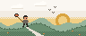
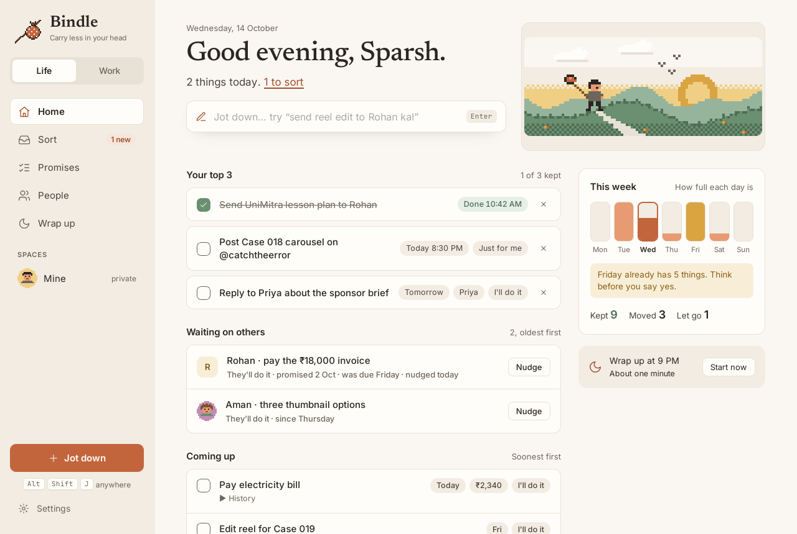
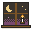

Windows Your system
First time: Windows may say it protected your PC. Choose More info, then Run anyway.
Bindle keeps the promises you make and the ones made to you. Jot one down in three seconds, sort it when you have a moment, and close each day knowing nothing slipped.


Each build comes straight from the source code on GitHub. Your promises stay on your computer; nothing about them is sent anywhere. Once installed, Bindle tells you when a new version is ready and installs it when you say so.
First time: Windows may say it protected your PC. Choose More info, then Run anyway.
First time: right-click Bindle in Applications and choose Open. If macOS says it is damaged, run xattr -cr /Applications/Bindle.app in Terminal.
Install with sudo apt install ./Bindle_*.deb, or make the AppImage executable and run it.
Every build is listed on the releases page.
A promise is anything you said you would do, anything someone owes you, and anything you promised yourself. Bindle gives each one a first step and a day, then gets out of the way.
Press Alt Shift J over any app and type it the way you would say it: “send reel edit to Rohan kal shaam 7 baje”. Bindle reads the day, time, money and person, in English and Hinglish.
Everything you jot waits in Sort until you decide: keep it, save it for later, or let it go. Every change can be undone.
Open, later, done and let go, with search across every promise, person and first step. Ten thousand promises search in a few milliseconds.
What you owe each person and what they owe you, with a friendly recap you can copy and send yourself. Give each person a picture and their pronouns.

About a minute each evening: what you kept, a quick choice for what is still open, and tomorrow’s top 3. Then rest.
When you allow it, Claude and other AI apps can read your day and suggest promises over MCP. Suggestions wait in Sort for you; an AI never changes anything.